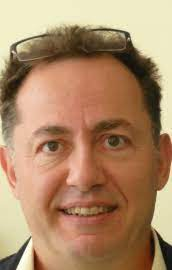
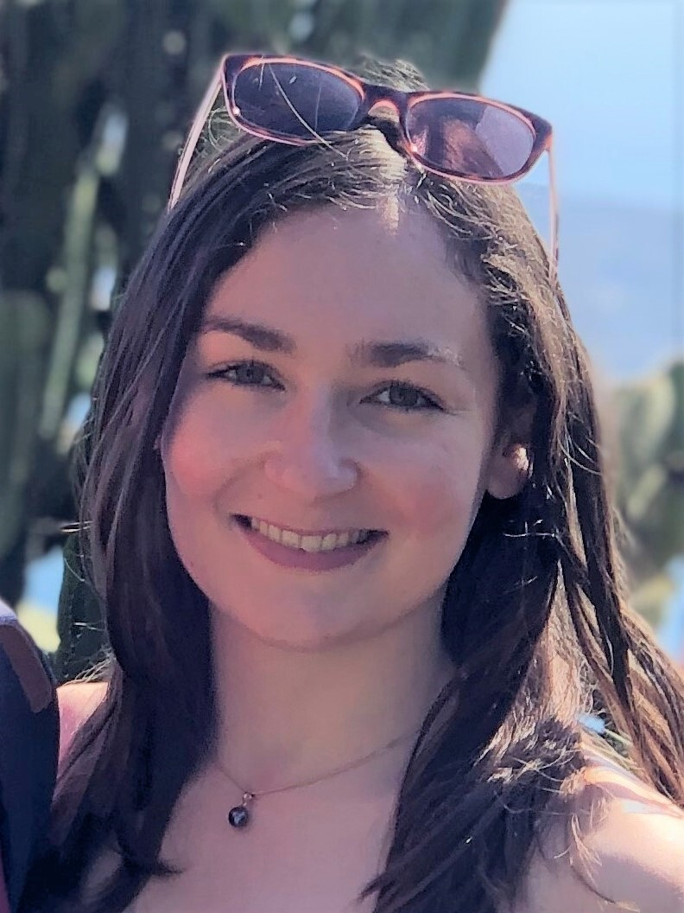
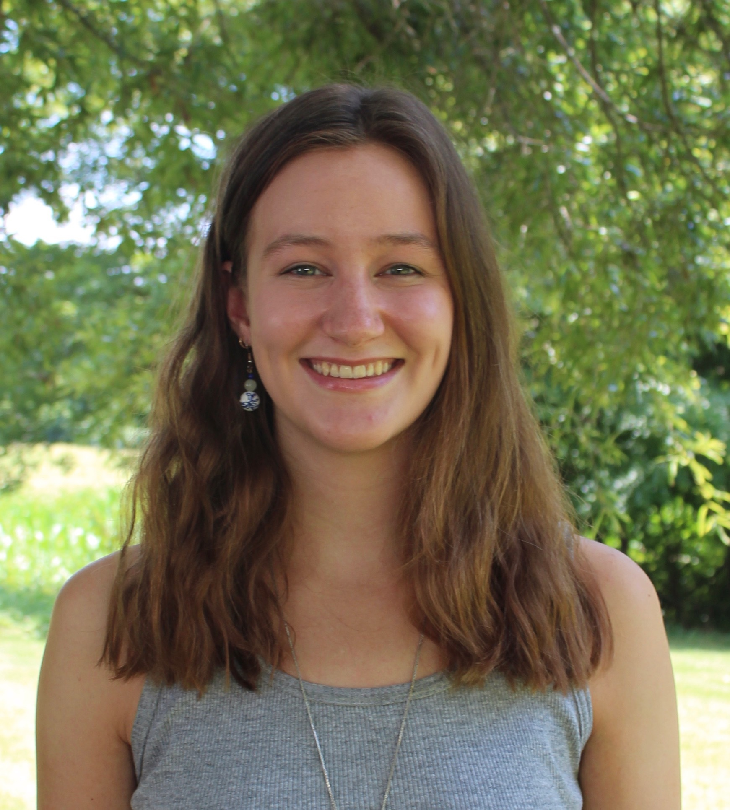
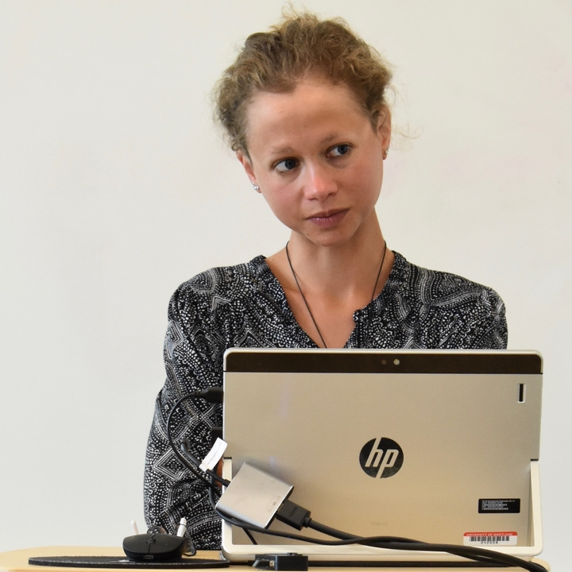

Ira Noveck
Here is some information about Ira Noveck.

Students
Cecile Larralde
I am a first year PhD student working on non-truth-conditional discourse connectives. I completed my undergraduate studies at University College London (UCL) where I was introduced to various aspects of the study of language from clinical linguistics to philosophy of language. During that time I also spent a year at the University of Heidelberg where I studied computational linguistics. In my fourth and final year I worked with Kriszta Szendroi on an experimental investigation on focus and disjunction scope parameters in negative sentences. This research project, at the interface between syntax and pragmatics strongly influenced me to pursue a PhD in experimental pragmatics. After my bachelor I worked for the French Embassy in Berlin and for the Franco-German Office for Youth but I quickly started missing the academic environment. A year later I went back to UCL to complete an MSc in language sciences with a specialization in language development. For my dissertation, I had the chance to be co-supervised by Nausicaa Pouscoulous at UCL as well as by Ira Noveck, my current PhD supervisor, at the Laboratoire de Linguistique Formelle. For this project, I worked on the processing of the discourse connectives but and so, which nicely prepared me for my doctoral research.

Kira Van Voorhees
I am a second year master's student in cognitive science at ENS-PSL. I received my BA in cognitive & linguistic sciences and mathematics from Wellesley College in 2020. I am interested in the intersection of numerical cognition with the semantics and pragmatics of numbers and quantifiers.

Nicolas Petit
Here is some information about Nicolas.
Post-Docs
Anouk Dieuleveut
I’m currently a postdoctoral researcher at the Laboratoire de Linguistique Formelle, working on a project on the acquisition of modals in French funded by the Fyssen foundation. I did my PhD at the University of Maryland in the US, with Valentine Hacquard and Alexander Williams. I was part of the project Acquiring the language of possibility. Before, I did my master at the CogMaster in Paris, where I was working with Benjamin Spector and Emmanuel Chemla, and I was a Course Lecturer at McGill University in Montréal for one year.

Morgan Moyer
I'm currently a postdoc at the LLF working with Ira and Cecile on the pragmatics of discourse connectives. Before that, I was a postdoc with Judith Degen at Stanford ALPS lab doing corpus experimental research on (non-)exhaustivity in wh-questions. I completed my PhD at Rutgers in 2020 on the pragmatics of (non-)exaustivity, supervised by Kristen Syrett.